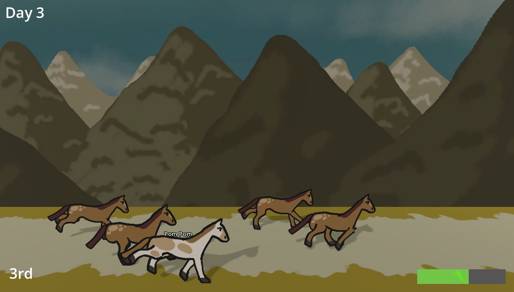

I was happy with my ranking, especially since I haven't been in a game jam since I think 2021. I had a pretty big concept for only having 3 days to do it. I was disapointed I didn't have the time to add sounds / music, but I make up for it in gameplay.
I did everything solo, except some art was done by Max C.
- Link Here
